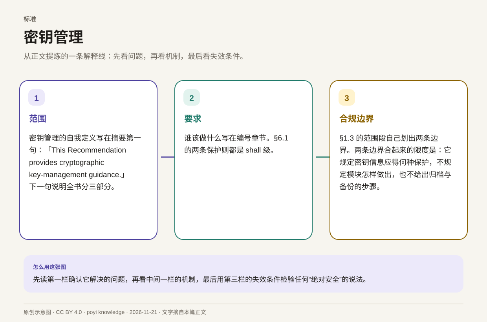
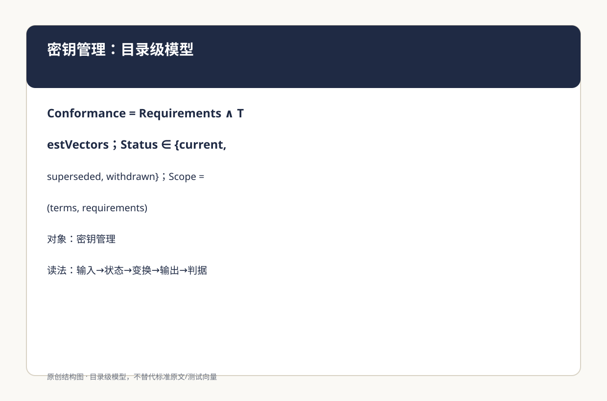

原理与机制
标准：密钥管理（Key Management）。它的自我定义写在摘要第一句：「This Recommendation provides cryptographic key-management guidance.」下一句说明全书分三部分，而留存的本份是第一部分：「Part 1 provides general guidance and best practices for the management of cryptographic keying material, including definitions of the security services that may be provided when using cryptography and the algorithms and key types that may be employed」。同一摘要把政策与规划要求分派给另一册：「Part 2 provides guidance on policy and security planning requirements for U.S.government agencies.」引文点名其中两类：可用的安全服务定义、可以采用的算法与密钥类型；每一类密钥需要哪种保护、如何提供写在同一摘要的后续句里。它因此给出的是框架、术语与保护要求，而不是一份算法规范。

为什么重要
风险陈述在文首的执行摘要：「The proper management of cryptographic keys is essential to the effective use of cryptography for security.」同页紧接一句说明选择错误的代价：「Inappropriate choices may result in an illusion of security but little or no real security for the protocol or application.」§1.1 复述同一个判断，并写出它要处理的成因：「Organizations and developers are presented with many new choices in their use of cryptographic mechanisms.」两句合起来是一个判断：管理失当时算法强度并不等于系统安全，选择失误换来的只是安全感的错觉。
应用与实例
谁该做什么写在编号章节。§5.6.2 面向采购方：「Agencies that procure systems should consider the potential operational lifetime of the system.」并紧跟一条硬性要求：「The agencies shall either select algorithms and key sizes that are expected to be secure during the entire system lifetime or should ensure that the algorithms and key sizes can be easily updated.」§6.1 把保护义务落在密钥信息本身：「Confidentiality protection shall be provided for all secret key information」，以及「Integrity protection shall be provided for all key information.」层级在同一条里就分了手：考虑运行寿命是 should，第一个分支「The agencies shall either select algorithms and key sizes that are expected to be secure during the entire system lifetime」是 shall，第二个分支「or should ensure that the algorithms and key sizes can be easily updated」回落为 should；§6.1 的两条保护则都是 shall 级。

边界与攻击面
§1.3 的范围段自己划出两条边界。第一条是模块实现：「This Recommendation does not address the implementation details for cryptographic modules that may be used to achieve the identified security requirements.」紧接的一句把细节交回别处：「These details are addressed in FIPS 140,9 the FIPS 140 implementation guidance, and the derived test requirements」（原句在此处接一个 csrc 网址，该条目按发布文本不带 URL 的规矩截到该处之前）」，其后才是归档与备份的运维程序：「This Recommendation does not address the requirements or procedures for operating a key archive or backup capability other than discussing the types of keying material that are appropriate to back up or include in an archive and the protection to be provided to that keying material.」同段还自陈其补位性质：「This Recommendation supplements more focused standards and guidelines.」紧接第一条边界之后另有一句交接：「These details are addressed in FIPS 140」。两条边界合起来的限度是：它规定密钥信息应得何种保护，不规定模块怎样做出，也不给出归档与备份的步骤。
历史与背景
扉页首两行给出「NIST Special Publication 800-57 Part 1 Revision 5」，作者与单位为「Elaine Barker Computer Security Division Information Technology Laboratory」，DOI 行是「This publication is available free of charge from:」，DOI 10.6028/NIST.SP.800-57pt1r5。致谢页记下第五版所继承的前任作者与机构：「The National Institute of Standards and Technology (NIST) gratefully acknowledges and appreciates contributions by previous authors of this document on the many security issues associated with this Recommendation: William Barker, William Burr, and Timothy Polk from NIST; Miles Smid from Orion Security; and Lydia Zieglar from the National Security Agency.」这些都是文件自己的门面信息：分册与修订号、作者与所在部门、以 DOI 给出的免费获取地址，以及致谢点名的前任作者与机构，可见第五版是在早期版本的作者工作之上重写。
逐步示例与核验
形式模型与复算步骤
[S=\min_i S_i,\quad S_i\in{\text{密钥强度},\text{分组安全},\text{实现安全}}]
密钥管理的公开参数、密钥/随机数与消息；变量说明：S 为综合安全强度；各分量取最小值，不能只看密钥位数。1.读取标准规定的密钥/分组/模式参数。2.按标准表换算等效强度。3.取最弱分量作为系统强度。边界：公式只覆盖已登记的参数与假设；参数取值、标准版本和实现细节仍以来源为准。
参考出处
- Wikipedia search entry for 密钥管理. https://zh.wikipedia.org/w/index.php?search=%E5%AF%86%E9%92%A5%E7%AE%A1%E7%90%86
- Handbook of Applied Cryptography (Menezes, van Oorschot, Vanstone). https://www.cacr.math.uwaterloo.ca/hac/